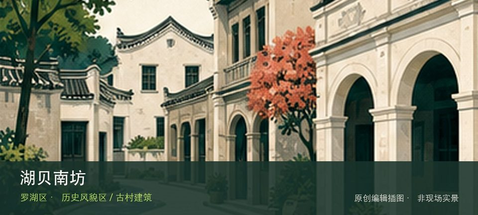

适合谁
适合建筑、地方史和社区观察者；参观时须尊重居民、宗教礼仪与生产秩序。

SHENZHEN GUIDE · 062
东门街道湖贝旧村 · 历史风貌区 / 古村建筑
湖贝南坊位于东门街道湖贝旧村，首批历史风貌区保留老深圳墟周边村落尺度，旧巷、传统建筑与高密度商业城区形成强烈对照。与同类地点相比，最值得停下来的差异落在湖贝旧村街巷和传统建筑肌理这两个具体节点上。阅读这处地点要把湖贝旧村街巷与传统建筑肌理放回仍在使用的街巷或社区中，不把历史空间当成布景。先看公开区域，再按居民生活、礼仪和开放边界调整停留，不进入封闭建筑。
WHY GO
适合建筑、地方史和社区观察者；参观时须尊重居民、宗教礼仪与生产秩序。
首次游览湖贝南坊不求走全，先完成湖贝旧村街巷这一项观察，再根据同行者体力选择传统建筑肌理，并保留原路退出方案。
公共交通先到东门街道湖贝旧村片区，再以湖贝南坊公开参观入口为终点；多入口地点须按计划游线选择入口，并预先锁定返程站点。
车辆停在湖贝南坊外围正规公共停车场后步行进入；不驶入窄巷，不占居民门口、作业区或消防通道。
10 月至次年 4 月步行较舒适；夏季避开正午，雨天留意石板、台阶和老建筑周边湿滑。
NEARBY IDEAS